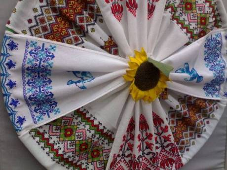

НА КІНОРИНОК АMERICAN FILM MARKET ВЕЗУТЬ 7 УКРАЇНСЬКИХ ФІЛЬМІВ
"Захар Беркут", "Фоксер і Макс", "Черкаси", "Микита Кожум’яка", "Пригоди Святого Миколая", "Мавка: Лісова пісня" та "Викрадена принцеса: Руслан і Людмила" - саме ці кінороботи Україна везе на найбільший у світі кіноринок Аmerican Film Market, який триватиме з 6 по 13 листопада в Санта-Моніці, штат Каліфорнія, США.
Крім того, на національному стенді буде представлено каталог з 20 найкращих проектів української кіноіндустрії.
Щороку кіноринок Аmerican Film Market відвідують представники з понад 70 країн (керівники компаній, директори з розвитку, агенти, режисери, дистрибутори, директори фестивалів, фінансисти, продюсери, письменники). Кількість відвідувачів протягом всього часу - більш, ніж 8000.
"ЦІНА ПРАВДИ"
Фільм "Ціна правда" розповідає про журналіста Ґарета Джонса, який у 1933 році вирушив до Радянського Союзу, щоб викрити правду про злочини сталінського режиму та Голодомор в Україні.
Фільм знімали в Україні, Польщі та Шотландії. В Україні зйомки проходили на найбільшій площі Європи у Харкові, яку на деякий час спеціально закрили для жителів та гостей міста.
Днями фільм отримав головну нагороду 44 Фестивалю польських художніх фільмів "Золоті Леви". Крім того, художник-поставновник стрічки Гжегож Піонтковскі отримав спеціальний приз за найкращий продакшн-дизайн.
Режисером стрічки виступила номінантка на премію "Оскар" Аґнєшка Голланд.
У широкий прокат фільм вийде 28 листопада.
Довідка
У 1933 році вельський репортер Ґарет Джонс шукає свою наступну велику історію. Останні новини приводять його до Москви, де він знайомиться з журналісткою Адою Брукс. Ада відкриває йому очі на «радянську утопію», яка не має нічого спільного з реальністю. І Ґарет, попри смертельні погрози, розпочинає своє розслідування. Переховуючись від спецслужб СРСР, крок за кроком він розкриває правду про трагедію українського народу: Голодомор, жорстку цензуру, змову та масові репресії. Саме його викриття згодом стануть підґрунтям для роману «Колгосп тварин» Джорджа Орвелла.
"УКРАЇНЕЦЬ ВИГРАВ ПІСЕННИЙ КОНКУРС BBC CARDIFF SINGER OF WORLD"

3 травня у Києві зафіксують новий Національний рекорд України - пенсіонерка Любов Романів власноруч вишила майже 200 українських рушників.
Киянка Любов Романів працює інженером-фізиком на державному підприємстві "Антонов", але весь свій вільний час вона присвятила улюбленому заняттю. Зачарована магією українських символів та елементів, які вишивала на полотні її мати, вона ще 5-річною дівчинкою вперше взяла в руки голку. З того часу жінка присвятила все своє життя пізнанню сакрального змісту української традиційної вишивки.
Рушники Любові Романів особливі відтворенням старовинних орнаментів, властивих її рідному лемківському краю, створенням на їх основі власних сучасних композицій, а також технікою вишивання - майстриня вишиває дуже дрібним хрестиком.